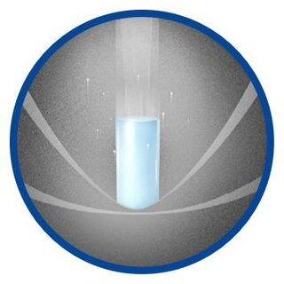
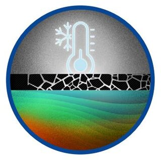
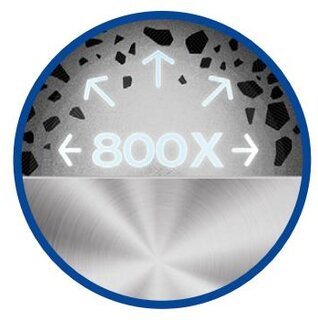
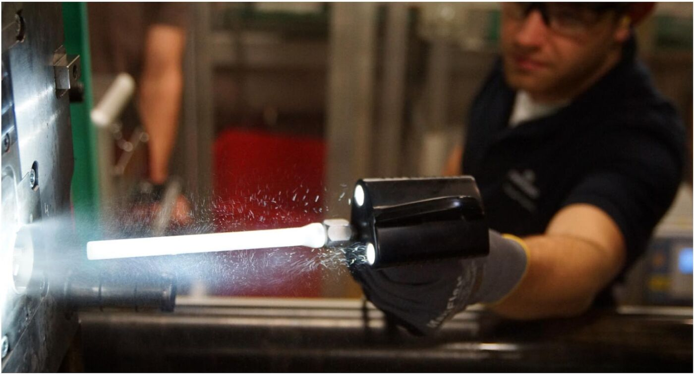

드라이아이스 세척의 원리, 장점, 안전 수칙과 자주 묻는 질문을 한 곳에 정리했습니다.
포집된 CO2에 새로운 가치를 더합니다
드라이아이스는 이산화탄소(CO2)의 고체 형태입니다. 산업시설이나 바이오가스 시설 등에서 포집된 CO2를 정제 · 액화한 뒤 다시 고체로 전환하여 만들어지며, 이는 탄소 포집 및 활용(CCU, Carbon Capture and Utilization)의 한 형태로, 원래 배출될 수 있었던 CO2를 회수해 냉각과 세정에 활용할 수 있는 유용한 자원으로 다시 사용하는 방식입니다.
포집된 CO2는 정제와 압축 과정을 거쳐 액체 상태로 저장 · 운송되며, 이후 펠레타이저를 통해 드라이아이스로 생산됩니다. 이렇게 만들어진 드라이아이스는 산업 현장에서 냉각 및 친환경 세정 매체로 다시 활용됩니다.

포집 → 정제 · 액화 → 저장 → 운송 → 현장 저장 → 고체화 → 드라이아이스로 이어지는 순환 과정
한 번 배출된 CO2를 그대로 버리는 대신, 다시 산업에 활용할 수 있는 자원으로 전환합니다.
드라이아이스는 재활용된 CO2를 사용하기 때문에 탄소발자국 산정 시 CO2가 사용 단계에서 다시 계산되지 않습니다. CO2는 생산자 단계에서 이미 산정됩니다.
— California Air Resources Board (캘리포니아 대기자원위원회)
드라이아이스는 새로운 CO2를 만들어 사용하는 것이 아니라, 이미 포집된 CO2를 다시 활용하는 순환형 자원입니다.
세정 과정에서는 물이나 화학 세정제를 사용하지 않으며, 드라이아이스 자체는 사용 후 다시 기체로 승화합니다. 이러한 특성은 물 사용과 2차 폐기물 발생을 줄이는 산업 세정 방식으로 이어집니다.
회수된 CO2를 다시 가치 있는 자원으로.
드라이아이스는 탄소를 순환시키는 또 하나의 방법입니다.
드라이아이스 세척은 고체 이산화탄소(CO2) 펠릿 또는 미세 입자를 압축공기로 가속하여 표면의 오염물과 잔류물을 제거하는 산업용 세정 방식입니다. 드라이아이스는 표면과 충돌한 직후 고체에서 기체로 바로 승화하므로, 세정 매체 자체가 2차 잔류물로 남지 않는다는 점이 가장 큰 특징입니다. 모래 · 소다처럼 표면을 깎아내는 연마재 세척과 달리, 드라이아이스 입자는 표면을 마모시키지 않으면서도 강력한 세정력을 낼 수 있어 정밀 부품과 민감한 표면에도 폭넓게 적용됩니다.
영상으로 보는 드라이아이스 세척 (출처: VATEK 유튜브 채널)
드라이아이스 세척의 세정 메커니즘은 아래 세 가지 효과가 결합되어 나타납니다.

초음속에 가깝게 가속된 펠릿이 오염층에 운동에너지를 전달해 표면에서 떼어냅니다.

영하 78.5℃의 저온 충격이 오염물과 기재 사이의 결합력을 급속히 약화시킵니다.

펠릿이 순간적으로 승화 · 팽창하며 균열된 오염층을 표면에서 완전히 분리시킵니다.

세척 전후 차이를 직관적으로 보여주는 작업 현장 사진 (참고: Cold Jet 공식 기술자료 p.13)
드라이아이스 블라스팅 자체는 위험한 작업이 아니지만, 다음 사항은 반드시 지켜야 합니다.
네. 비전도성 · 비마모성 특성 덕분에 통전 중인 전기 패널이나 정밀 금형에도 널리 사용됩니다. 다만 장비 민감도에 따라 압력 · 노즐을 조정해야 하므로 사전 테스트를 권장합니다.
드라이아이스 입자는 세척 즉시 기체로 승화하기 때문에 남는 것은 원래 있던 오염물질뿐입니다. 별도 건조나 폐수 처리가 필요 없습니다.
연마재 · 화학용제 · 고압수 세척 등과의 구체적인 차이는 타 세척방식과 비교 페이지에서 항목별로 확인하실 수 있습니다.
(참고: Cold Jet 공식 기술자료 The Definitive Guide to Dry Ice Blasting 및 coldjet.com)
현장 상황에 맞는 가장 정확한 답변을 담당자가 안내해 드립니다.